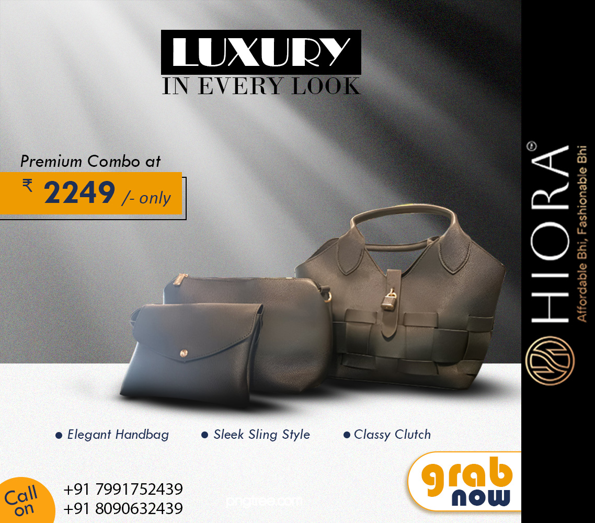

A social media campaign created for Hiora, a fashion and lifestyle bag brand. The project focused on showcasing product aesthetics, brand identity and customer engagement through premium social media creatives designed for digital marketing platforms.
The brand required visually appealing creatives that could showcase product quality while maintaining a premium and modern aesthetic suitable for social media audiences.
Created multiple campaign creatives that enhanced brand presentation and provided a professional social media presence.

